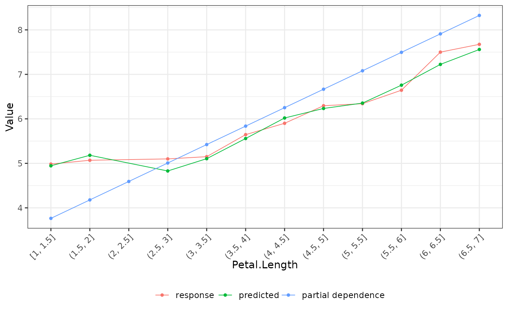
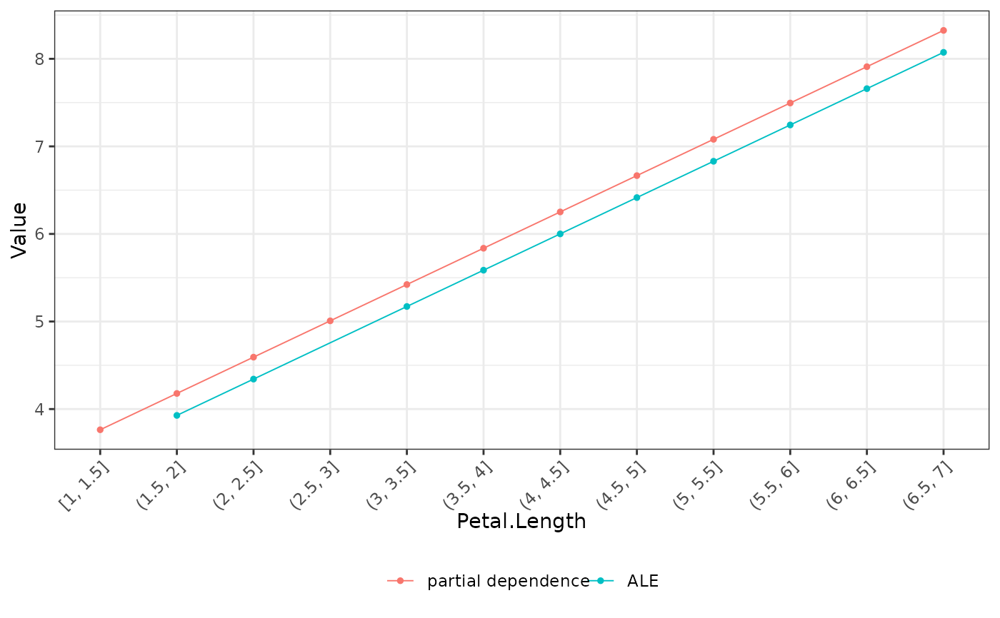
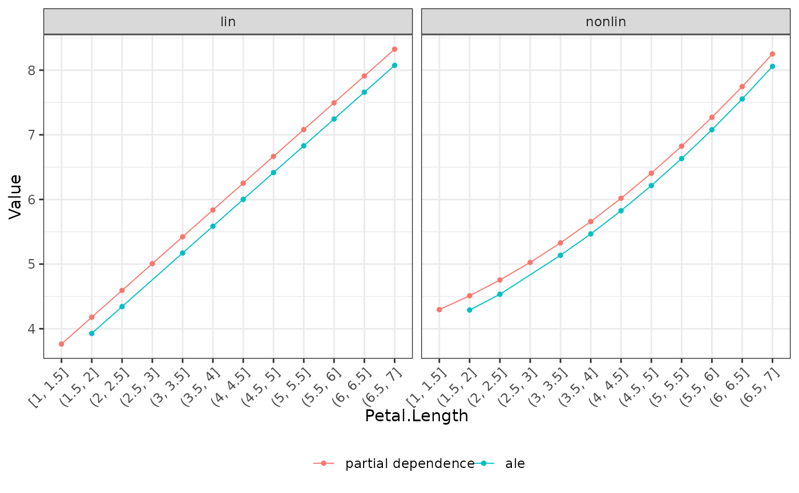

R/light_effects.R
light_effects.RdCalculates response- prediction-, partial dependence, and ALE profiles of a
(multi-)flashlight with respect to a covariable v.
light_effects(x, ...)
# Default S3 method
light_effects(x, ...)
# S3 method for class 'flashlight'
light_effects(
x,
v,
data = NULL,
by = x$by,
stats = "mean",
breaks = NULL,
n_bins = 11L,
cut_type = c("equal", "quantile"),
use_linkinv = TRUE,
counts_weighted = FALSE,
v_labels = TRUE,
pred = NULL,
pd_indices = NULL,
pd_n_max = 1000L,
pd_seed = NULL,
ale_two_sided = TRUE,
...
)
# S3 method for class 'multiflashlight'
light_effects(
x,
v,
data = NULL,
breaks = NULL,
n_bins = 11L,
cut_type = c("equal", "quantile"),
...
)An object of class "flashlight" or "multiflashlight".
Further arguments passed to formatC() in forming the
cut breaks of the v variable.
The variable name to be profiled.
An optional data.frame.
An optional vector of column names used to additionally group the results.
Deprecated. Will be removed in version 1.1.0.
Cut breaks for a numeric v. Used to overwrite automatic binning via
n_bins and cut_type. Ignored if v is not numeric.
Approximate number of unique values to evaluate for numeric v.
Ignored if v is not numeric or if breaks is specified.
Should a numeric v be cut into "equal" or "quantile" bins?
Ignored if v is not numeric or if breaks is specified.
Should retransformation function be applied? Default is TRUE.
Should counts be weighted by the case weights?
If TRUE, the sum of w is returned by group.
If FALSE, return group centers of v instead of labels.
Only relevant if v is numeric with many distinct values.
In that case useful for instance when different flashlights use different data sets.
Optional vector with predictions (after application of inverse link).
Can be used to avoid recalculation of predictions over and over if the functions
is to be repeatedly called for different v and predictions are computationally
expensive to make. Not implemented for multiflashlight.
A vector of row numbers to consider in calculating partial dependence profiles and "ale".
Maximum number of ICE profiles to calculate (will be randomly
picked from data) for partial dependence and ALE.
Integer random seed used to select ICE profiles for partial dependence and ALE.
If TRUE, v is continuous and breaks
are passed or being calculated, then two-sided derivatives are calculated
for ALE instead of left derivatives. More specifically: Usually, local effects
at value x are calculated using points in \([x-e, x]\).
Set ale_two_sided = TRUE to use points in \([x-e/2, x+e/2]\).
An object of class "light_effects" with the following elements:
response: A tibble containing the response profiles.
Column names can be controlled by options(flashlight.column_name).
predicted: A tibble containing the prediction profiles.
pd: A tibble containing the partial dependence profiles.
ale: A tibble containing the ALE profiles.
by: Same as input by.
v: The variable(s) evaluated.
Note that ALE profiles are being calibrated by (weighted) average predictions. The resulting level might be quite different from the one of the partial dependence profiles.
light_effects(default): Default method.
light_effects(flashlight): Profiles for a flashlight object.
light_effects(multiflashlight): Effect profiles for a multiflashlight object.
fit_lin <- lm(Sepal.Length ~ ., data = iris)
fl_lin <- flashlight(model = fit_lin, label = "lin", data = iris, y = "Sepal.Length")
# PDP, average response, average predicted by Species
eff <- light_effects(fl_lin, v = "Petal.Length")
plot(eff)

# PDP and ALE
plot(eff, use = c("pd", "ale"), recode_labels = c(ale = "ALE"))

# Second model with non-linear Petal.Length effect
fit_nonlin <- lm(Sepal.Length ~ . + I(Petal.Length^2), data = iris)
fl_nonlin <- flashlight(
model = fit_nonlin, label = "nonlin", data = iris, y = "Sepal.Length"
)
fls <- multiflashlight(list(fl_lin, fl_nonlin))
# PDP and ALE
plot(light_effects(fls, v = "Petal.Length"), use = c("pd", "ale"))
